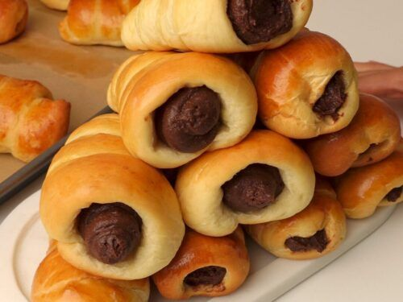
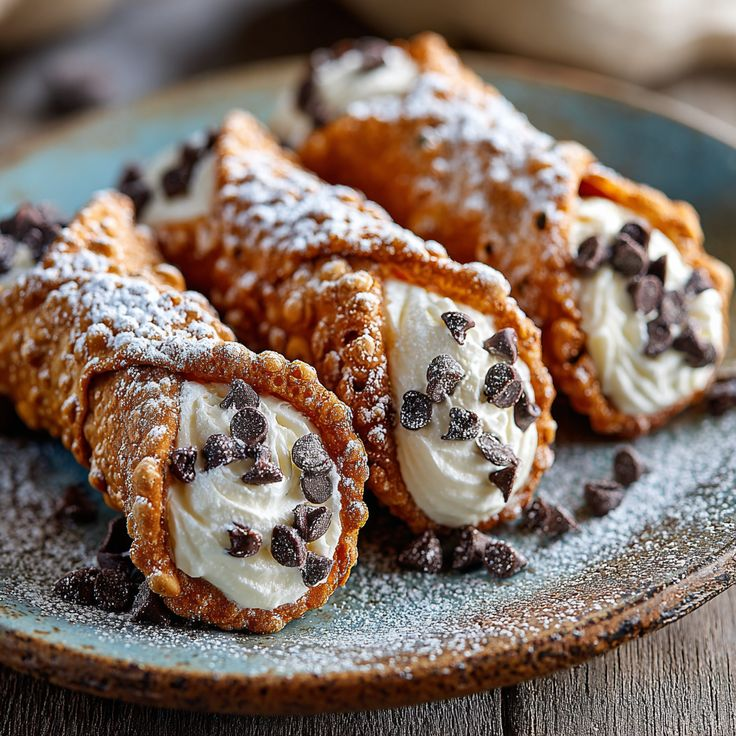
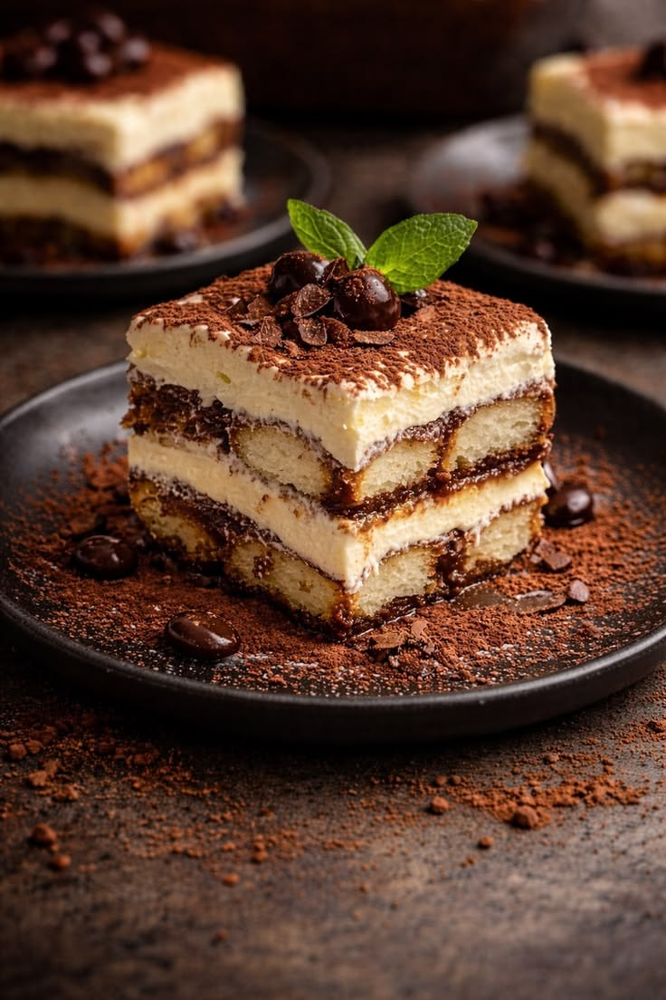
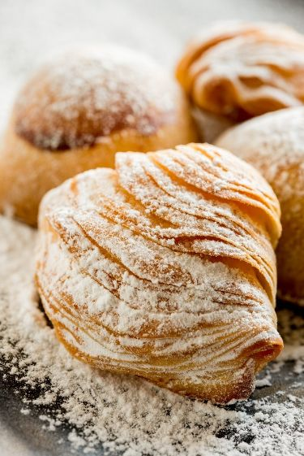
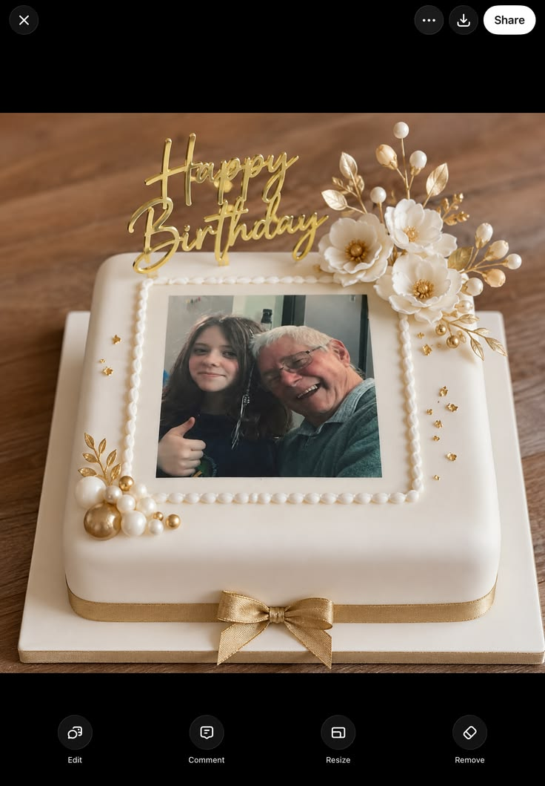

Our Products
Handcrafted daily, using traditional Italian and French technique.

Cornetti
Italian-style croissants, lightly sweet and flaky, baked fresh every morning.

Cannoli
Crisp Sicilian shells filled with sweet ricotta cream, dipped in pistachio or chocolate.

Tiramisu
Layers of espresso-soaked savoiardi and mascarpone cream, dusted with cocoa.

Sfogliatelle
Crisp, shell-shaped layered pastry filled with sweet ricotta and citrus.

Custom Celebration Cakes
Bespoke cakes for birthdays, weddings, and special occasions, designed around your vision. Submit your details on our Enquiry page to get started.